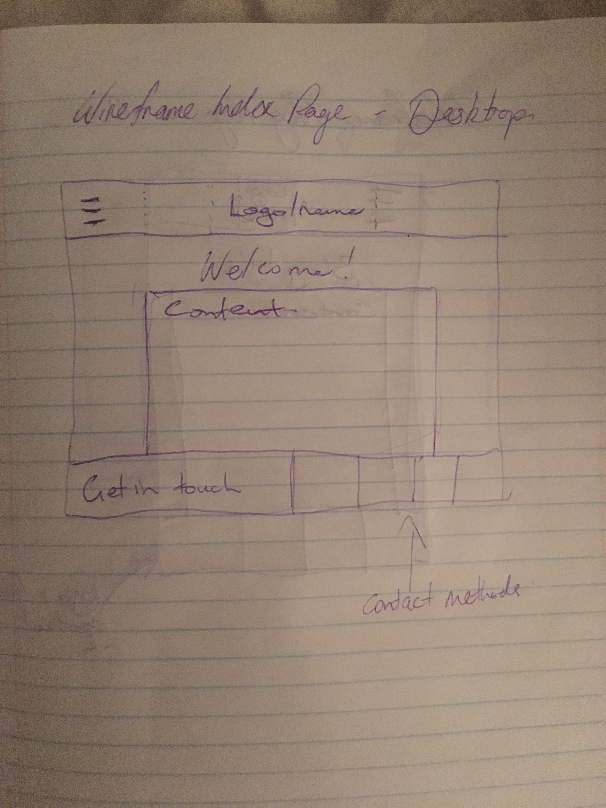
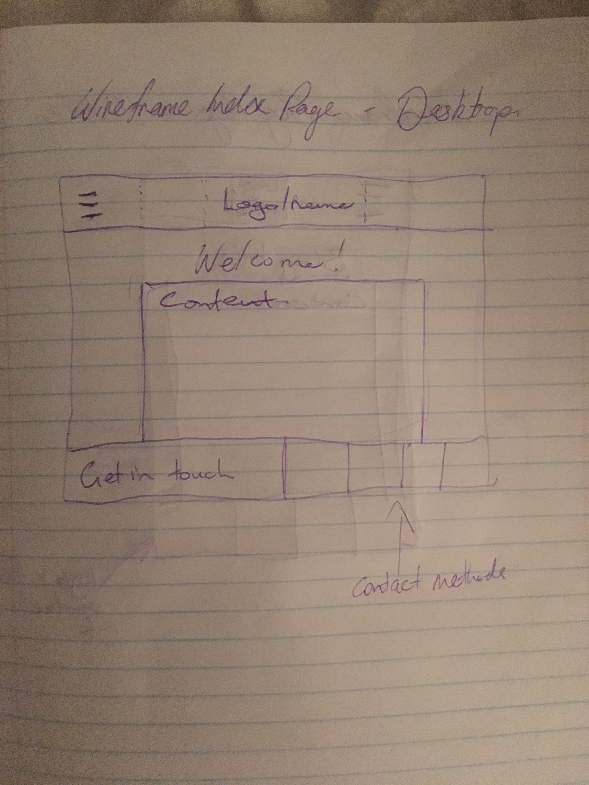

Rory Macdonald
Future Web Developer
My thoughts on design - to - web
- What a responsive site is, and why responsiveness is important.
- A responsive site is a site that will adapt to the screen size of the user - depending on how they access the site. E.g. A mobile user has a narrower screen than a desktop computer, so a responsive site would change to fit the mobile user's screen to make sure the same content is still available, and the information is still easy to access and view.
- What mobile first design is, and why it's important.
- Mobile first design is a site that is built to fit a mobile screen from the ground up. Then it is made responsive to adapt to users of larger displays secondarily. This is important because it is far easier to add content to fit a mobile user's screen from the start, than to squeeze the content of a larger screen sized site design into a mobile display. Also it is one of the fastest and most popular ways of accessing the internet now.
- What frameworks are, and their pros and cons.
- A framework is a generic set of css classes that ensure a consistent site design and arrangement of elements accross a site. This makes layout a very easy task as you do not need to style each element individually, rather, you can apply a generic set of rules to arrange everything in a consistent manner.
- What a wireframe is and why we use it.
- A wireframe is a sketch of a sites poposed design. Around all of the content we draw a square e.g. text, images, titles and so on. This is because our browsers interpret all elements as squares and then styling is applied. By generating a wireframe we can undertand how best to create and arrange our site's layout in squares.
 

- The aspects of your wireframes you found difficult to implement, and why.
- Initially I found it difficult to keep a consistent centering of the page title with the main title - this was becuase the number of columns varied. The welcome title/page title was 12-columns in width whereas the main name section at the top of the page had a menu button on the left that off centred it. So I added another div with the same width as the menu button to centre the main name/title.